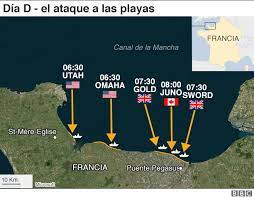
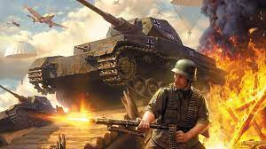
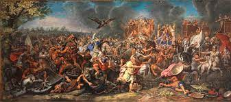
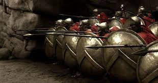
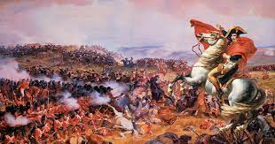

Estrategias
Dia D
Requirió de una gran logística, que implicó el uso de desinformación tecnológica y visual para que el enemigo no detectara movimientos (como el uso de una base falsa por parte de los estadounidenses), asimismo, se construyeron dos muelles artificiales debido a que los establecidos se encontraban bien defendidos, así como carros de batalla modificados para resistir los posibles ataques en la playa. El resultado fue un desembarco masivo en toda la costa de Normadía por parte de unidades de Estados Unidos, Canadá y Reino Unido; previo a esto, en la madrugada se infiltraron varios efectivos en la costa para preparar el terreno

Blitzkrieg
La Guerra Relampago popularizada por el Ejército Alemán. Hanz Guderian la utilizaría cono una forma mecanizada de ataque, por el uso de unidades blindadas de batalla (los Panzer), mientras que la infantería servia como un apoyo a esta. Durante la incursión a Francia, lanzaron varios ataques sorpresa con dichos vehículos con el fin de no darle tiempo al rival de reagruparse, además de borrar la cadena de mando con el uso generalizado del radio para estar siempre en contacto con los otros. Fue la primera vez que la artillería mecanizada se mostraba en combate real.

Alejandro y la batalla de Gaugamela
Superado por casi 4 a 1, Alejandro decidió enfrentarse en una batalla definitiva a Darió, gran rey de la Antigua Persia. Para no verse rodeado, el macedonio decidió separar sus tropas en distintas facciones; con él al mando del ala derecha de la caballería. Además, decidió alargar su flanco derecho, al mismo tiempo que avanzaba al paso de sus unidades de apoyo (lanzadores de piedras con hondas). Dicha táctica le sirvió para hacer que el ejército persa no se percatara de su presencia. Esto mientras el ala izquierda se encargaba de resistir el embate persa, con esto se creó una brecha por la que pudo pasar e inhabilitar a gran parte del ejército enemigo desde sus filas; así como enfrentar directamente a Darío.

Territorio y falange en las termopilas
Conocida gracias a la película 300; la Batalla de las Termópilas fue el primer encuentro entre el recién renovado Ejército Persa de Jerjes y las fuerzas de la Antigua Grecia. Supone uno de los mayores logros tácticos en términos de uso del terreno; pues los espartanos situaron sus fuerzas en la entrada de las Termópilas, un estrecho por el que tenían que pasar las numerosas unidades de Medio Oriente. Aquí, la falange griega se hizo sentir, pues suponía una ventaja sobre el ataque frontal persa; las unidades del frente resistían el embate, al mismo tiempo que herían al contrario con sus lanzas. Si bien resultó en una derrota, la resistencia griega fue lo suficiente para que el resto de las polis se organizará para la invasión.

El waterloo de Napoleon
La única forma de derrotar al genio táctico de Napoleón era con un ataque igual o más ingenioso que el suyo, cosa que supuso la Batalla de Waterloo; además de varios errores por parte del francés. Después de invadir los Países Bajos y esperar la respuesta de sus enemigos; separó a sus fuerzas con el fin de acabar con la resistencia inmediata. Lo que sucedió de manera inmediata fue que prusianos y germanos atacaron por los flancos, dividiendo al ejército francés en un ataque sostenido frontal por los dos lados, entrando directamente entre sus líneas.
